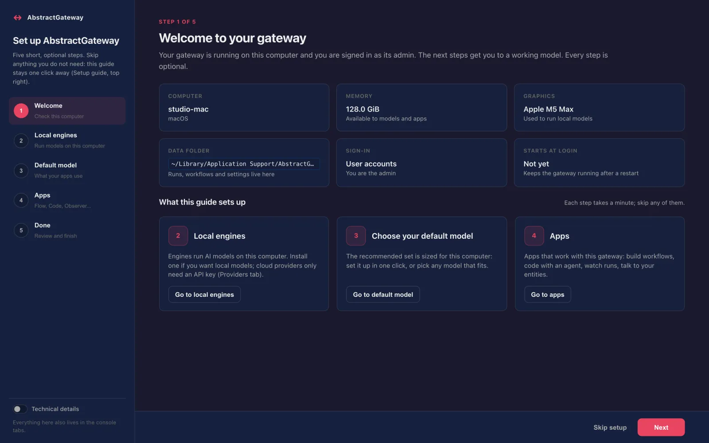
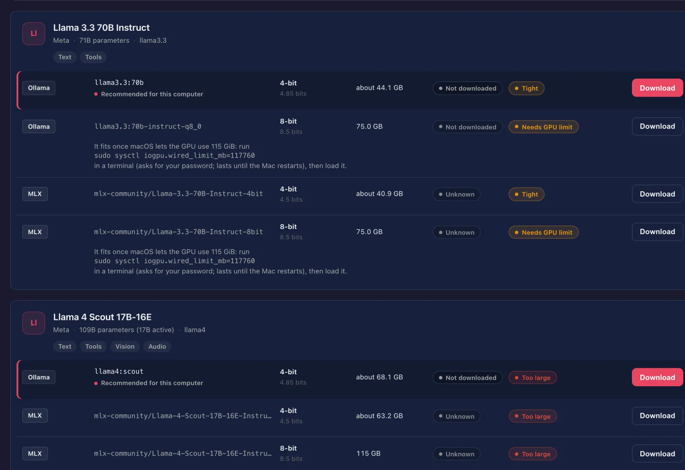
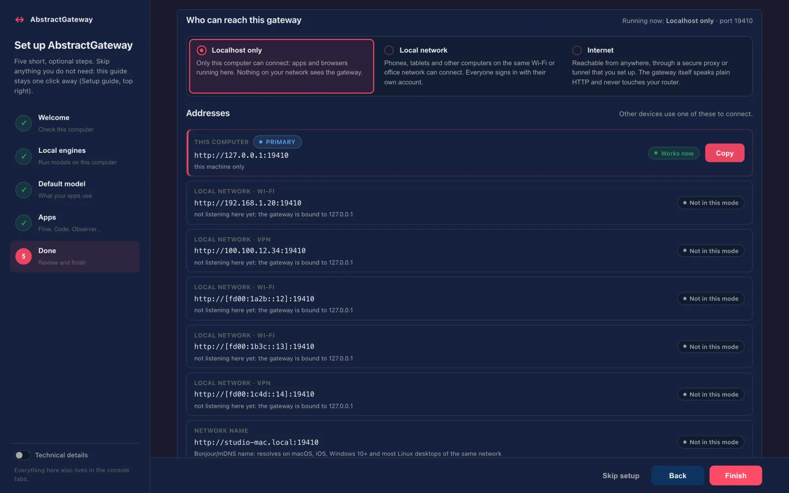
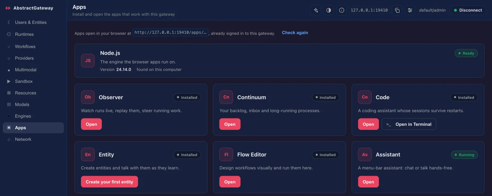
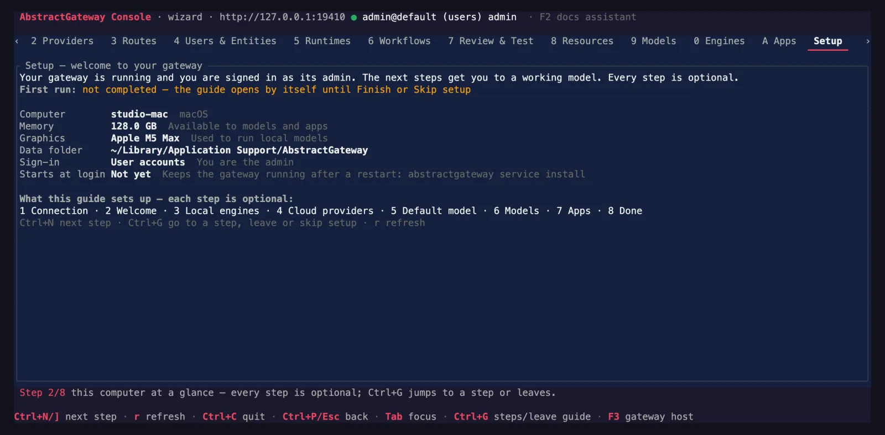
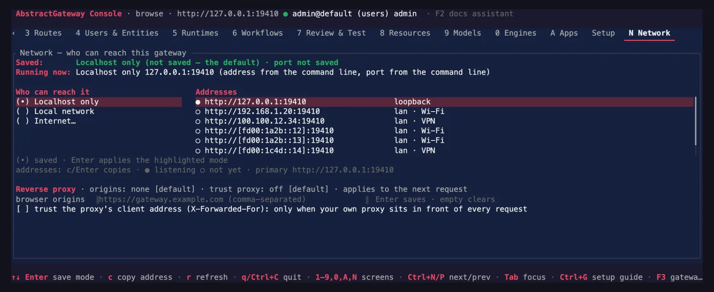

AbstractGateway and AbstractCore consoles
The consoles are part of their packages, not packages of their own. AbstractGateway comes with a web console at /console and a terminal console, abstractgateway-console, for servers without a browser; both use the same gateway routes and the same admin rules. AbstractCore, used on its own as a library, has its own pair: the web console of abstractcore serve and abstractcore-console. Both terminal consoles are built on AbstractTUI.
# AbstractGateway web console: start the gateway, open the one-time link it prints
abstractgateway serve # http://127.0.0.1:8080/console#claim=…
abstractgateway claim --open # a fresh link (valid 10 minutes, this machine only)
# AbstractGateway terminal console: built by the installer, or
cargo install abstractgateway-console
abstractgateway-console --gateway-url http://127.0.0.1:8080 --token <admin token>A guide that sets up this machine
The first time you sign in, the gateway console opens a setup guide. Every step is optional, and the Setup button (top right, admins) reopens it later.
| Step | What it shows |
|---|---|
| Welcome | This machine (memory, GPU), the data folder, the sign-in mode, and whether the gateway starts at login. |
| Local engines | The engines found here (Ollama, LM Studio, MLX, llama.cpp, …), installed or not, running or not, with an Install button that shows the exact command first. |
| Default model | Use recommended defaults for text, voice, images and video where this computer can run them, a Download button for each missing model, and the catalog filtered to models that fit. |
| Apps | Observer, Continuum, Code, Entity and the Flow Editor, then the desktop Assistant: Install, then Open. |
| Done | How to reopen the console, the Start at login switch, and the terminal console's commands. |

What "recommended" means on your computer
With AbstractCore 2.18.1 (coming); today’s 2.18.0 differs in a few figures.
AbstractCore recommends one model per capability for the kind of computer the gateway runs on, and Use recommended defaults writes the starter set (text, speech output, images and video) where this computer can run it. Speech input and music are recommended too, but you set them yourself. For text on an Apple silicon Mac the recommendation follows memory (8 GB up to 24 GB: Qwen3.5 9B; 24 GB up to 128 GB: Qwen3.8 27B; from 128 GB: Qwen3.8 Flash-Next). When a model may not fit, the console says so instead of switching silently, and a capability this computer cannot run shows the reason. Fit notes assume macOS's default GPU memory limit (75% of unified memory).
| This computer | Text and chat | Speech output (text to speech) | Speech input (speech to text) | Music generation | Image input (vision) | Image generation | Video generation |
|---|---|---|---|---|---|---|---|
| Apple silicon Mac, 8 GB | Qwen3.5 9BMLX (AbstractCore), Apple GPU (Metal) fits tightly | Supertonic 3 (TTS)Supertonic on ONNX Runtime (AbstractVoice), processor | Whisper base (speech to text)faster-whisper on CTranslate2 (AbstractVoice), processor set it yourself | Not availableACE-Step 1.5 XL turbo (music) needs about 10.9 GiB of memory while it generates (estimated), and macOS's GPU memory limit on this Mac is about 6.0 GiB, about 4.0 GiB of it left for a model after working buffers; use a computer with more memory, or a cloud music backend (acemusic or elevenlabs-music, with its API key) | Read by the text model | Not availableFLUX.2 [klein] 4B (8-bit) needs about 8.5 GiB of memory while it generates (estimated), and macOS's GPU memory limit on this Mac is about 6.0 GiB, about 4.0 GiB of it left for a model after working buffers; use a Mac with more unified memory, or a cloud image provider | Not availableWan2.2 TI2V 5B (text/image to video) needs about 63.5 GiB of memory while it generates (measured with AbstractVision with MLX-Gen at 1280x704x121, which keeps the text encoder and VAE in memory; this engine's figure, not the model's minimum), and macOS's GPU memory limit on this Mac is about 6.0 GiB, about 4.0 GiB of it left for a model after working buffers; use an Apple silicon Mac with more unified memory, or an OpenAI-compatible video endpoint (AbstractVision OpenAI-compatible backend) |
| Apple silicon Mac, 16 GB | Qwen3.5 9BMLX (AbstractCore), Apple GPU (Metal) | Supertonic 3 (TTS)Supertonic on ONNX Runtime (AbstractVoice), processor | Whisper base (speech to text)faster-whisper on CTranslate2 (AbstractVoice), processor set it yourself | Not availableACE-Step 1.5 XL turbo (music) needs about 10.9 GiB of memory while it generates (estimated), and macOS's GPU memory limit on this Mac is about 12.0 GiB, about 10.0 GiB of it left for a model after working buffers; use a computer with more memory, or a cloud music backend (acemusic or elevenlabs-music, with its API key) | Read by the text model | FLUX.2 [klein] 4B (8-bit)MLX-Gen (AbstractVision), Apple GPU (Metal) fits tightly | Not availableWan2.2 TI2V 5B (text/image to video) needs about 63.5 GiB of memory while it generates (measured with AbstractVision with MLX-Gen at 1280x704x121, which keeps the text encoder and VAE in memory; this engine's figure, not the model's minimum), and macOS's GPU memory limit on this Mac is about 12.0 GiB, about 10.0 GiB of it left for a model after working buffers; use an Apple silicon Mac with more unified memory, or an OpenAI-compatible video endpoint (AbstractVision OpenAI-compatible backend) |
| Apple silicon Mac, 18 GB | Qwen3.5 9BMLX (AbstractCore), Apple GPU (Metal) | Supertonic 3 (TTS)Supertonic on ONNX Runtime (AbstractVoice), processor | Whisper base (speech to text)faster-whisper on CTranslate2 (AbstractVoice), processor set it yourself | ACE-Step 1.5 XL turbo (music)ACE-Step on Diffusers and PyTorch (AbstractMusic), Apple GPU (MPS, bfloat16) fits tightly set it yourself | Read by the text model | FLUX.2 [klein] 4B (8-bit)MLX-Gen (AbstractVision), Apple GPU (Metal) | Not availableWan2.2 TI2V 5B (text/image to video) needs about 63.5 GiB of memory while it generates (measured with AbstractVision with MLX-Gen at 1280x704x121, which keeps the text encoder and VAE in memory; this engine's figure, not the model's minimum), and macOS's GPU memory limit on this Mac is about 13.5 GiB, about 11.5 GiB of it left for a model after working buffers; use an Apple silicon Mac with more unified memory, or an OpenAI-compatible video endpoint (AbstractVision OpenAI-compatible backend) |
| Apple silicon Mac, 24 GB | Qwen3.8 27BMLX (AbstractCore), Apple GPU (Metal) fits tightly | Supertonic 3 (TTS)Supertonic on ONNX Runtime (AbstractVoice), processor | Whisper base (speech to text)faster-whisper on CTranslate2 (AbstractVoice), processor set it yourself | ACE-Step 1.5 XL turbo (music)ACE-Step on Diffusers and PyTorch (AbstractMusic), Apple GPU (MPS, bfloat16) set it yourself | Read by the text model | FLUX.2 [klein] 4B (8-bit)MLX-Gen (AbstractVision), Apple GPU (Metal) | Not availableWan2.2 TI2V 5B (text/image to video) needs about 63.5 GiB of memory while it generates (measured with AbstractVision with MLX-Gen at 1280x704x121, which keeps the text encoder and VAE in memory; this engine's figure, not the model's minimum), and macOS's GPU memory limit on this Mac is about 18.0 GiB, about 16.0 GiB of it left for a model after working buffers; use an Apple silicon Mac with more unified memory, or an OpenAI-compatible video endpoint (AbstractVision OpenAI-compatible backend) |
| Apple silicon Mac, 32 GB, 36 GB or 48 GB | Qwen3.8 27BMLX (AbstractCore), Apple GPU (Metal) | Supertonic 3 (TTS)Supertonic on ONNX Runtime (AbstractVoice), processor | Whisper base (speech to text)faster-whisper on CTranslate2 (AbstractVoice), processor set it yourself | ACE-Step 1.5 XL turbo (music)ACE-Step on Diffusers and PyTorch (AbstractMusic), Apple GPU (MPS, bfloat16) set it yourself | Read by the text model | FLUX.2 [klein] 4B (8-bit)MLX-Gen (AbstractVision), Apple GPU (Metal) | Not availableWan2.2 TI2V 5B (text/image to video) needs about 63.5 GiB of memory while it generates (measured with AbstractVision with MLX-Gen at 1280x704x121, which keeps the text encoder and VAE in memory; this engine's figure, not the model's minimum), and macOS's GPU memory limit on this Mac is about 24.0 GiB, about 22.0 GiB of it left for a model after working buffers; use an Apple silicon Mac with more unified memory, or an OpenAI-compatible video endpoint (AbstractVision OpenAI-compatible backend) |
| Apple silicon Mac, 64 GB | Qwen3.8 27BMLX (AbstractCore), Apple GPU (Metal) | Supertonic 3 (TTS)Supertonic on ONNX Runtime (AbstractVoice), processor | Whisper base (speech to text)faster-whisper on CTranslate2 (AbstractVoice), processor set it yourself | ACE-Step 1.5 XL turbo (music)ACE-Step on Diffusers and PyTorch (AbstractMusic), Apple GPU (MPS, bfloat16) set it yourself | Read by the text model | FLUX.2 [klein] 4B (8-bit)MLX-Gen (AbstractVision), Apple GPU (Metal) | Not at the default sizeWan2.2 TI2V 5B (text/image to video) needs about 63.5 GiB of memory while it generates (measured with AbstractVision with MLX-Gen at 1280x704x121, which keeps the text encoder and VAE in memory; this engine's figure, not the model's minimum), and macOS's GPU memory limit on this Mac is about 48.0 GiB, about 46.0 GiB of it left for a model after working buffers; at 832x480 (121 frames) it needs about 34.3 GiB (measured with the same engine) and fits this computer: set output.video to mlx-gen/AbstractFramework/wan2.2-ti2v-5b-diffusers-8bit yourself and generate at 832x480; use an Apple silicon Mac with more unified memory, or an OpenAI-compatible video endpoint (AbstractVision OpenAI-compatible backend)At 832×480 (121 frames): about 34.3 GiB (measured), fits. set it yourself |
| Apple silicon Mac, 96 GB | Qwen3.8 27BMLX (AbstractCore), Apple GPU (Metal) | Supertonic 3 (TTS)Supertonic on ONNX Runtime (AbstractVoice), processor | Whisper base (speech to text)faster-whisper on CTranslate2 (AbstractVoice), processor set it yourself | ACE-Step 1.5 XL turbo (music)ACE-Step on Diffusers and PyTorch (AbstractMusic), Apple GPU (MPS, bfloat16) set it yourself | Read by the text model | FLUX.2 [klein] 4B (8-bit)MLX-Gen (AbstractVision), Apple GPU (Metal) | Wan2.2 TI2V 5B (text/image to video)MLX-Gen (AbstractVision), Apple GPU (Metal) fits tightly |
| Apple silicon Mac, 128 GB | Qwen3.8 Flash-NextMLX (AbstractCore), Apple GPU (Metal) raise GPU limit sudo sysctl iogpu.wired_limit_mb=114688 | Supertonic 3 (TTS)Supertonic on ONNX Runtime (AbstractVoice), processor | Whisper base (speech to text)faster-whisper on CTranslate2 (AbstractVoice), processor set it yourself | ACE-Step 1.5 XL turbo (music)ACE-Step on Diffusers and PyTorch (AbstractMusic), Apple GPU (MPS, bfloat16) set it yourself | Read by the text model | FLUX.2 [klein] 4B (8-bit)MLX-Gen (AbstractVision), Apple GPU (Metal) | Wan2.2 TI2V 5B (text/image to video)MLX-Gen (AbstractVision), Apple GPU (Metal) |
| Apple silicon Mac, 192 GB, 256 GB or 512 GB | Qwen3.8 Flash-NextMLX (AbstractCore), Apple GPU (Metal) | Supertonic 3 (TTS)Supertonic on ONNX Runtime (AbstractVoice), processor | Whisper base (speech to text)faster-whisper on CTranslate2 (AbstractVoice), processor set it yourself | ACE-Step 1.5 XL turbo (music)ACE-Step on Diffusers and PyTorch (AbstractMusic), Apple GPU (MPS, bfloat16) set it yourself | Read by the text model | FLUX.2 [klein] 4B (8-bit)MLX-Gen (AbstractVision), Apple GPU (Metal) | Wan2.2 TI2V 5B (text/image to video)MLX-Gen (AbstractVision), Apple GPU (Metal) |
| Linux or Windows with an NVIDIA GPU | Qwen3.5 9BLM Studio, NVIDIA GPU (CUDA) | Supertonic 3 (TTS)Supertonic on ONNX Runtime (AbstractVoice), processor | Whisper base (speech to text)faster-whisper on CTranslate2 (AbstractVoice), NVIDIA GPU (CUDA) set it yourself | ACE-Step 1.5 XL turbo (music)ACE-Step on Diffusers and PyTorch (AbstractMusic), NVIDIA GPU (CUDA) set it yourself | Read by the text model | Not availableMLX-Gen image generation needs MLX, and MLX runs only on Apple Silicon Macs (macOS, arm64); set output.image to an image engine this host runs: diffusers (install profile gpu), sdcpp (stable-diffusion.cpp, optional extra) or a cloud image provider | Not availableMLX-Gen video generation needs MLX, and MLX runs only on Apple Silicon Macs (macOS, arm64); no other local engine in AbstractFramework generates video (AbstractVision's Diffusers video path is disabled, stable-diffusion.cpp has none); the remaining option is an OpenAI-compatible video endpoint (AbstractVision OpenAI-compatible backend) |
| Linux or Windows, processor only | Qwen3.5 9BLM Studio, processor | Supertonic 3 (TTS)Supertonic on ONNX Runtime (AbstractVoice), processor | Whisper base (speech to text)faster-whisper on CTranslate2 (AbstractVoice), processor set it yourself | Not availableACE-Step 1.5 XL turbo (music) needs about 10.9 GiB of memory while it generates (estimated), and this computer can give a model about 10.0 GiB; use a computer with more memory, or a cloud music backend (acemusic or elevenlabs-music, with its API key) | Read by the text model | Not availableMLX-Gen image generation needs MLX, and MLX runs only on Apple Silicon Macs (macOS, arm64); set output.image to an image engine this host runs: diffusers (install profile gpu), sdcpp (stable-diffusion.cpp, optional extra) or a cloud image provider | Not availableMLX-Gen video generation needs MLX, and MLX runs only on Apple Silicon Macs (macOS, arm64); no other local engine in AbstractFramework generates video (AbstractVision's Diffusers video path is disabled, stable-diffusion.cpp has none); the remaining option is an OpenAI-compatible video endpoint (AbstractVision OpenAI-compatible backend) |
| Intel Mac | Qwen3.5 9BOllama, processor | Supertonic 3 (TTS)Supertonic on ONNX Runtime (AbstractVoice), processor | Whisper base (speech to text)faster-whisper on CTranslate2 (AbstractVoice), processor set it yourself | Not availableACE-Step music generation runs on PyTorch, and current PyTorch builds for macOS require Apple Silicon (arm64); the last Intel-Mac build is 2.2.2; set output.music to a cloud music backend (acemusic or elevenlabs-music, with its API key) | Read by the text model | Not availableMLX-Gen image generation needs MLX, and MLX runs only on Apple Silicon Macs (macOS, arm64); set output.image to an image engine this host runs: diffusers (install profile gpu), sdcpp (stable-diffusion.cpp, optional extra) or a cloud image provider | Not availableMLX-Gen video generation needs MLX, and MLX runs only on Apple Silicon Macs (macOS, arm64); no other local engine in AbstractFramework generates video (AbstractVision's Diffusers video path is disabled, stable-diffusion.cpp has none); the remaining option is an OpenAI-compatible video endpoint (AbstractVision OpenAI-compatible backend) |
AbstractCore 2.18.1 publishes this table and the JSON it comes from; until then, AbstractCore’s local models page documents the catalog and the fit verdicts. On your own machine, with AbstractCore 2.18.1 (coming): abstractcore models recommendations --host.
Everything about your gateway, in one place
Open http://127.0.0.1:8080/console. The console uses the address you opened it from, so it never asks for a gateway URL. The Technical details switch shows commands and ids throughout.
Models that fit this machine
One card per model with every 4-bit and 8-bit build, its size, whether it is downloaded and whether it fits: Fits, Tight, Partial offload, Too large, or Needs GPU limit on Apple Silicon, with the exact sudo sysctl iogpu.wired_limit_mb=… command to copy. Search Hugging Face from the same view.
Local engines
Ollama, LM Studio, MLX, llama.cpp and others on the gateway host: installed or not, running or not; install, start and stop, each confirmed with the command it runs.
Cloud and endpoint providers
OpenAI, Anthropic, OpenRouter, Portkey, LM Studio, Ollama and custom OpenAI-compatible endpoints, with write-only keys.
Routes for every capability
Default models for text, voice, images, video and more. A route whose engine is missing says so with the install command; voice pickers say why a provider lists no voices.
Install and open the apps
Each app opens in a new tab at /apps/<app>/, already signed in. Code can also open in a terminal on the gateway machine; the desktop Assistant opens on the gateway machine, in its menu bar (macOS) or system tray (Windows, Linux).
Who can reach the gateway
This computer only (the default), the local network, or the internet, with every address to copy and Advanced: reverse proxy.
Memory, models, start at login
Memory and GPU meters, resident models (warm up, lock, unload), prompt caches, and the Gateway card: pause, update, restart, desktop icon and a real Start at login switch.
Workflows and defaults
Pick the default agent workflow for each app interface, turn streamed replies on by default, import, export and delete workflow bundles.
Users, entities and a sandbox
User records and token rotation, the summoned-entity roster, and a sandbox for quick chats and media generation against the configured defaults. A docs assistant in the top bar answers from the gateway's own documentation.



/apps/<app>/, signed in.The same console, over SSH
abstractgateway-console does what the web console does, with the same confirmations. It is a Rust application rendered by AbstractTUI, and it reuses the Models and Engines screens of AbstractCore’s terminal console. On a headless server it runs the setup guide, and it never tries to open a browser on a machine without a display.
Setup guide and thirteen screens
For an admin whose first run is not finished, it opens the guide: Connection → Setup → Engines → Providers → Routes → Models → Apps → Review, ending with Finish and a Start at login switch. Otherwise it opens in browse mode.
-
1–9,0,A,N: Connection, Providers, Routes, Users & Entities, Runtimes, Workflows, Review & Test, Resources, Models, Engines, Apps, Network - N Network shows the saved mode next to what is running now, and offers the restart that applies it
- A Apps over SSH shows the one-time link and the
ssh -Lforward instead of starting a browser - F2 docs assistant, F3 gateway host panel (pause, restart, update, start at login)
- Finds the gateway from
--gateway-url, else~/.abstractframework/gateway.json, else127.0.0.1:8080, and follows it to a new port
# on the server (the installer prints this line, filled in)
abstractgateway-console --gateway-url http://127.0.0.1:8080 --token <admin token>
# choose the mode at launch
abstractgateway-console --wizard
abstractgateway-console --browse
# print the About text without opening the interface
abstractgateway-console --about --gateway-url http://127.0.0.1:8080Keys: Tab focus, Enter activate, Ctrl+G the guide, r refresh, q quit. Admin-only actions are refused before anything is sent, with the reason. Needs Rust 1.87+ to build.


N): the saved mode, what is running, and every address.The console's command-line twins
The one-line installer puts every terminal command in ~/.local/bin, next to abstractgateway: the terminal console, AbstractCode's terminal client, and the AbstractCore, AbstractVoice, AbstractMusic and AbstractVision commands. The console's Apps page installs and updates abstractcode in that same folder.
abstractgateway-console --gateway-url http://127.0.0.1:8080 --token <admin token>
abstractcode login --token <admin token> # once, then: abstractcode
abstractgateway apps tui-command code # on the gateway's computer: a one-time signed-in line
abstractgateway-config claim-url # a new one-time console sign-in link
abstractcore models catalog --fits # the Models tab from the command lineAbstractCore has its own consoles
When you use AbstractCore on its own, without a gateway, abstractcore serve starts its OpenAI-compatible server on 127.0.0.1:8000 and prints a one-time link to its web console at /console: see what this machine can run, browse and download models with fit badges, delete weights, and install engines such as Ollama with one confirmation. Every action shows its command. abstractcore-console (crates.io, v0.4.0) is the terminal version, rendered by AbstractTUI: the same Models and Engines screens, plus your default models, providers, API keys and capability routes. The gateway’s terminal console reuses these Models and Engines screens.
pip install "abstractcore[server]" && abstractcore serve # http://127.0.0.1:8000/console#claim=…
cargo install abstractcore-console # Rust 1.87+
abstractcore models catalog --fits # the same catalog from the command line